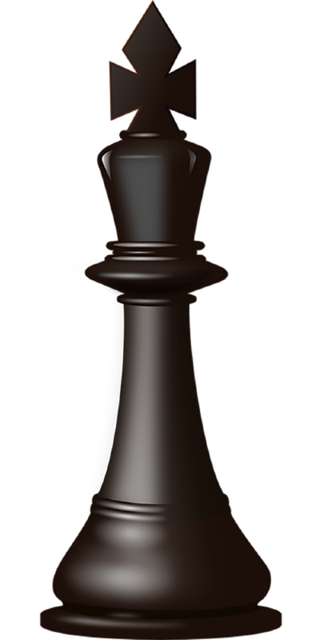

A peça do rei é a mais importante do xadrez, pois todo o objetivo do jogo gira em torno dela. Diferente das outras peças, o rei não precisa capturar muitas peças nem atacar constantemente; sua principal função é sobreviver. Se o rei estiver em perigo sem possibilidade de defesa, ocorre o xeque-mate, e a partida termina imediatamente. O rei se movimenta de forma limitada, podendo andar apenas uma casa por vez, em qualquer direção: horizontal, vertical ou diagonal. Apesar dessa movimentação curta, ele é uma peça estratégica, especialmente no final da partida, quando passa a participar mais ativamente do jogo. Existe também um movimento especial envolvendo o rei, chamado roque, que permite movê-lo duas casas em direção a uma torre, colocando-o em uma posição mais segura e ao mesmo tempo desenvolvendo a torre. Durante a maior parte da partida, o rei deve ser protegido, ficando geralmente atrás de outras peças. No entanto, quando restam poucas peças no tabuleiro, ele pode se tornar uma peça ofensiva importante, ajudando a pressionar o adversário. Em resumo, o rei não é a peça mais forte em termos de ataque, mas é a mais valiosa, pois sua perda significa o fim do jogo.